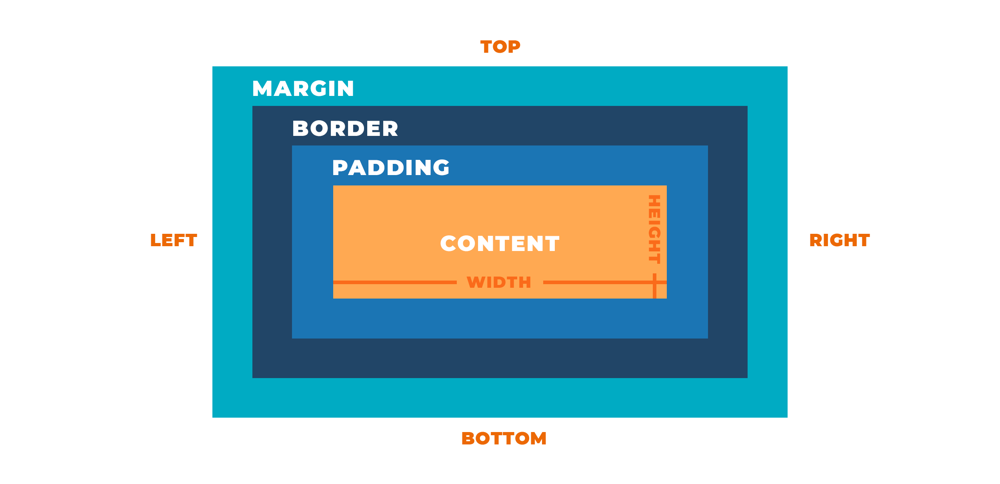
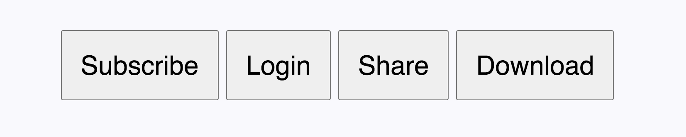
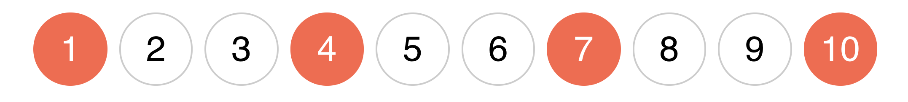

Блочная модель
В блочной модели любой элемент это прямоугольный контейнер, не зависимо от того, как он визуально представлен на странице. У элемента есть область содержимого и необязательные поля, отступы и рамка (граница).
- Область содержимого (content) - это контент элемента, например текст, изображение, видео или вложенные элементы. По умолчанию высота области содержимого определяется контентом, ширина - типом элемента (блочный или строчный).
- Внутреннее поле (padding) - это расстояние между контентом элемента и его рамкой (border). Используется для декоративных эффектов. Нельзя задавать отрицательные значения.
- Рамка (border) - граница элемента, по умолчанию её ширина равна нулю. Если цвет рамки не задан, она принимает цвет основного содержимого, например текста.
- Внешний отступ (margin) - добавляет отступ снаружи элемента, от внешней границы (рамки) до соседних элементов, тем самым разделяя их на странице. Может принимать отрицательные значения. Фон элемента никогда не распостраняется на внешний отступ.
ИНТЕРЕСНО
Для некоторых элементов в таблице стилей браузера установлены размеры полей и отступов по умолчанию. Например спискам, абзацам, заголовкам и т. д. Это было необходимо для того, чтобы текстовый контент страницы выглядел единообразно без дополнительного оформления.
Свойства width и height
Эти свойства позволяют явно указать общую ширину и высоту элемента, или только размер его области содержимого (контента), всё зависит от типа блочной модели.
Несколько советов при использовании этих свойств.
- Не задавайте элементам фиксированную высоту, пусть она определяется контентом. Жёстко установленная высота ведёт к проблеме переполнения, когда контента больше чем элемент может вместить.
- Большинству элементов задаётся только ширина. Указывать одновременно width и height стоит только декоративным элементам с фиксированным размером, например иконкам.
- Ширину можно задавать не только в px , em или rem , но и в процентах. В таком случае ширина блока будет рассчитана как процент от ширины родителя. Детальнее об этом при построении сеток.
ВНИМАНИЕ
Финальная ширина и высота блока div.box будет 220px, а не 150px, как указано в свойствах width и height. Дело в том, что есть несколько типов блочной модели, которые отличаются формулой расчёта размера элемента.
Свойство box-sizing
Устанавливает тип блочной модели элемента - формулу расчёта его размеров.
- content-box - свойства width и height задают ширину и высоту области содержимого и не включают в себя размеры полей (padding), границ (border) и отступов (margin).
- border-box - свойства width и height задают финальный размер элемента и включают в себя значения полей (padding) и границ (border), но не отступов (margin)
- inherit - наследует значение блочной модели предка.
Значение content-box
Этот тип блочной модели используется в браузерах по умолчанию. Расчёт финальных размеров элемента сложнее, потому что свойства width и height устанавливают не общий размер элемента, а только высоту и ширину его области содержимого (контента).

Формулы расчёта финальной ширины и высоты блока при значении content-box.
Задав элементу width 150px, padding 30px и border 5px, получим финальную ширину 220px.
В инструментах разработчика, на вкладке Computed , показана геометрия этого элемента.

Значение border-box
В этой блочной модели свойства width и height устанавливают финальные размеры элемента, а не его области содержимого. Контент автоматически «ужимается» так, чтобы внутри контейнера ещё вместились padding и border.

Формулы расчёта финальной ширины и высоты блока при значении border-box
Установив свойству box-sizing значение border-box, мы меняем тип блочной модели текущему элементу.
В инструментах разработчика, на вкладке Computed, показана геометрия этого элемента.

Глобальный border-box
Стандартная блочная модель в современных проектах это border-box. Для того, чтобы не задавать свойство box-sizing каждому элементу отдельно в самом начале файла стилей используется следующий CSS-код.
Используя универсальный селектор *, значение border-box устанавливается для всех элементов и псевдоэлементов (о них узнаем позже) документа.
Нормализация стилей
Мы хотим, чтобы HTML-элементы выглядели одинаково, независимо от браузера. К сожалению, это не так, в разных браузерах элементы могут выглядеть немного иначе. Когда браузер отображает веб-страницу, сначала применяется его базовая таблица стилей (user agent stylesheet), значения свойств в которой могут отличаться от таблиц стилей других браузеров. Это и приводит к небольшим отличиям во внешнем виде элементов.

Нормализация стилей это попытка решить данную проблему путём подключения ещё одного файла стилей, в котором исправлены все возможные расхождения между таблицами стилей браузеров. То есть это техника улучшения кроссбраузерности вебстраницы - одинакового отображения и работы сайта в различных браузерах.
Всё, что необходимо сделать, это подключить еще один файл стилей перед всеми вашими стилями.
ПОЛЕЗНО
В нормализаторе modern-normalize по умолчанию задан глобальный border-box, поэтому в своих стилях его можно не указывать.
Свойство padding

Составное свойство, контролирующее внутренние поля между контентом и рамкой, для всех сторон элемента. Результат работы зависит от количества значений свойства.
Также есть свойства для задания полей каждой стороны отдельно.
Поля (падинги) используются для декоративных эффектов. Например для создания свободного пространства между рамкой элемента и его контентом, как в примере. Если не задать падинг, то текст будет некрасиво прилегать к границе абзаца.
ПОЛЕЗНО
В примере свойства рамки не указаны явно, но она всё равно есть. По умолчанию её ширина равна 0px и она учавствует в построении геометрии элемента, поэтому можно задать поле между ней и контентом.
Свойство margin
Составное свойство контролирующее внешние отступы от рамки для всех сторон элемента. Результат работы зависит от количества значений свойства.
Также есть свойства для задания отступов каждой стороны отдельно.
Внешние отступы используются для создания зазора между двумя соседними элементами. В примере у каждого элемента карточки есть разноцветная рамка, поэтому видно, что между ними есть отступы.
ВНИМАНИЕ
При использовании падингов для создания зазоров, элементы будут плотно прилегать друг к другу рамками, без зазора. Если у элемента не задан цвет рамки или фона, визуально определить правильно ли сделаны отступы невозможно, нужно открывать инструменты разработчика.

Схлопывание вертикальных отступов
Вертикальные отступы соседних блочных элементов не складываются, а выбирается наибольший из двух. Схлопывание отступов выполняется только для блочных элементов в нормальном потоке документа.

Дадим верхнему блоку нижний отступ в 20px, а нижнему блоку верхний отступ в 40px. Из-за схлопывания, отступ между ними будет 40px, потому что выбирается больший из двух.
Выпадение вертикальных отступов
Вертикальный отступ вложенного блока выпадает из родительского и отталкивает обоих от соседа. Если у родительского элемента также был задан верхний отступ, то выберется наибольшее из значений

В примере мы задаём верхний отступ в div.outer-box40px для div.inner-box , а в результате отодвинется не он сам от верха div.outer-box , а весь div.outer-box от края экрана
ВНИМАНИЕ
Верхние и нижние отступы на стыке с блоком-родителем как будто пробивают его и выпадают наружу, это одна из самых частых ошибок вёрстки. Делайте отступы только между двумя соседними элементами.

Типы элементов
В таблице стилей браузера для каждого элемента установлен его тип - свойство display. Поведение элемента определяется его типом. Самые распространённые типы это блочные (block) и строчные (inline) элементы. Кроме этого есть некоторое количество дополнительных типов, например блочно-строчные (inline-block) элементы.

- Строчные элементы предназначены для выделения и оформления текстового контента. Например ссылка, кнопка, изображение и т. п.
- Блочные используются для разметки текстовых контейнеров (заголовок, список, абзац) и крупных смысловых разделов (секция, шапка, подвал).
- Узнать тип любого элемента можно в справочнике или спецификации .
Иногда необходимо, чтобы строчный элемент вёл себя как блочный и наоборот, поэтому значение свойства display можно менять по необходимости на любое другое.
Блочные элементы (block-level)
Визуально представляют собой прямоугольные области идущие друг за другом сверху вниз.

- Для них задано свойство display: block.
- Они занимают всю доступную ширину строки (пространство по горизонтали) внутри родителя.
- Их высота определяется содержимым, если явно не задана в свойстве height.
- Они всегда начинаются с новой строки, поэтому несколько соседних блочных элементов расположены вертикально друг под другом.
- Им можно задавать любые свойства геометрии элемента: ширину, высоту, поля, рамки и отступы.
ПОЛЕЗНО
Подавляющее большинство элементов - блочные. Например <h1>, <p>, <section>, <ul>, <li>, <div>, <header> и многие другие.
Фиксированная ширина
Даже если ширина блочных элементов задана явно, они все равно будут располагаться вертикально друг под другом. Всё свободное место в строке, по умолчанию, занимается автоматическим правым отступом ( margin-right ) элемента.
ИНСТРУМЕНТЫ РАЗРАБОТЧИКА
Чтобы посмотреть на отступ элемента необходимо использовать инструменты разработчика, визуально на странице они никак не выделяются.
Горизонтальное центрирование блочных элементов
Блочный элемент можно горизонтально центировать внутри его родителя, в случае когда родитель больше по ширине, чем центрируемый элемент. То есть блочному элементу задана фиксированна ширина. Для этого используется особенность автоматических горизонтальных отступов.
По умолчанию у блочного элемент автоматический правый отступ, который занимает всё свободное пространство в строке.
Если задать автоматические левый и правый отступы, свободное пространство распределяется поровну между ними, и блочный элемент центрируется.
Для более краткой записи можно использовать составное свойство margin, задав нулевые вертикальные отступы и автоматические горизонтальные.
Элемент-контейнер
Контейнер, обёртка, враппер, центровщик - всё это имена стандартного блочного элемента-контейнера для ограничения ширины и центрирования контента страницы.

В CSS создаётся класс container, который можно задать любому элементу, но на практике это всегда будет несемантический <div>. Контейнеру обязательно устанавливается ширина (фиксированная или адаптивная), по сетке из макета, автоматические горизонтальные отступы и необязательные поля, также по макету.
Контейнер может быть всего один - общий, оборачивающий сразу весь контент страницы. В следующем примере границы контейнера выделены пунктиром для наглядности.
Чаще всего контенеров несколько, так как в каждом разделе страницы необходим свой контейнер. При таком подходе можно удобно задавать различный полноразмерный фон и другие оформительные стили отдельным разделам страницы.
Строчные элементы (inline)
Визуально располагаются в одной строке друг за другом до тех пор, пока в ней хватит места, после чего начнут перепрыгивать на следующую строку и заполнять её.

- Для них задано свойство display: inline.
- Их ширина и высота зависят только от содержимого, явно задать их нельзя. То есть свойства width и height не имеют никакого эффекта.
- Они располагаются в строке до тех пор, пока в ней есть достаточно места, после чего новые переносятся на следующую строку
- Им можно задавать только горизонтальную геометрию: левые и правые поля, отступы и рамки. То есть они игнорируют значения верхних и нижних margin, padding и border.
Спан это строчный элемент, зададим ему разнообразную геометрию и посмотрим что будет.
ПОЛЕЗНО
Строчные элементы могут содержать только текст, медиаконтент и другие строчные элементы. Исключение составляет элемент <a> , который согласно спецификации может оборачивать абзацы, списки, таблицы, заголовки и целые разделы, при условии, что они не содержат другие интерактивные элементы - ссылки и кнопки.
Зазор у строчных элементов
У строчных и строчно-блочных элментов есть правый или, в случае изображений, нижний зазор. Это не margin или padding, а буквально пустое место - особенность того, как браузер располагает строчный контент в строке.
Величина этого зазора определяется размером текста ближайшего предка с явно определённым значением или, если такого предка нет, используется размер шрифта от браузера по умолчанию - 16px. Поэтому у кнопок, ссылок, спанов, полей ввода и других строчных элементов, по умолчанию будет зазор в 4px - 1/4 размера шрифта ближайшего предка.
Как преодолеть эту особенность современным способом мы рассмотрим в следующих занятиях. Сейчас же разберёмся как убрать нижний зазор у изображения.
Элементу div.card задан красный цвет фона. В первой карточке видна полоса цвета её фона между изображением и заголовком, а во второй карточке этой полосы нет. Во второй карточке изображению изменили тип элемента, сделав его блочным, в результате чего пропал нижний зазор.
Особенности вертикальных полей и рамок
Верхние и нижние поля, а также рамки строчного элемента, работают очень странно - не увеличивают размер блока, но визуально отображаются.
Визуально фон заполнил вертикальные поля и рамки, которые «залазят» на соседние строки абзацей и ведут себя очень странно. Это особенность отображения в браузере, они никак не влияют на геометрию соседних элементов и поэтому не используются.
Строчно-блочные элементы (inlineblock)
Гибрид между блочными и строчными элементами, который взял всё лучшее от обоих.
- Для них задано свойство display: inline-block.
- Их ширина и высота зависят от содержимого, но можно явно задать свойства width и height
- Они располагаются в строке до тех пор, пока в ней есть достаточно места, после чего новые переносятся на следующую строку.
- Им можно задавать любые свойства геометрии элемента: ширину, высоту, поля, рамки и отступы.
Они используются в тех случаях, когда строчным элементам нужно добавить декоративные эффекты. Например, задать ссылке вертикальные поля, отступ или ширину с высотой, визуально сделав из неё кнопку, или превратить <span> в иконку с фиксированными размерами.
Меняем тип элемента при помощи свойства display. Теперь ссылке, изначально строчному элементу, можно задать вертикальные поля и другую геометрию.
Прячем элементы
Значение display: none позволяет полностью скрыть элемент, освободив его пространство для других. Такой элемент изымается из потока документа, визуально скрывается и не участвует в раскладке страницы.
ИНТЕРЕСНО
Минус этого подхода в том, что изменение значения свойства display нельзя анимировать, но для этого есть другие подходы, с которыми познакомимся позже.
Наберём простую разметку переключаемых панелей (табов), в которых должна отображаться только активная панель.
Изначально спрячем все панели при помощи display: none, они будут визуально скрыты и освободят своё место в потоке документа. Далее добавим класс активной панели is-active в котором будем устанавливать display: block. Панель с классом is-active будет видна, остальные скрыты.
ИНТЕРЕСНО
Для того, чтобы это всё оживить, нужен язык программирования JavaScript. При каком-то событии можно будет динамически добавлять и удалять классы у элементов.
Структурные псевдоклассы
Структурные псевдоклассы это способ выбрать определённые элементы из коллекции дочерних элементов (соседей), без присваивания дополнительных классов. Дочерние элементы (соседи) - это элементы с общим родителем.
В примере выше элементы li.list-item это соседи, и к ним можно будет применить структурные псевдоклассы. В тоже время ссылки a.list-link не являются соседями, у них нет общего родителя, поэтому нельзя будет использовать псевдоклассы для выбора какой-то определённой ссылки или группы ссылок.
Псевдоклассы :first-child и :last-child
Позволяют выбрать первый или последний элемент в коллекции соседей. Например, если каждому элементу списка задать нижний отступ, то он будет и у последнего. Крайнюю геометрию необходимо обязательно чистить, потому что такие оступы могут неочевидно выпадать или расширять родителя.
Псевдокласс :last-child выбирает последний элемент в коллекции соседей.

Аналогично работает :first-child, применяя стили к первому элементу в коллекции соседей. Например, когда нужно задать верхний отступ всем элементам кроме первого.

Псевдокласс :not(selector)
Позволяет выбрать все элементы, которые не подходят под критерий - простой селектор записанный в скобках. Простой селектор это универсальный селектор, селектор типа, идентификатора, атрибута, класса или псевдокласса.
Правило применения нижнего отступа ко всем элементам кроме последнего можно записать так.
Псевдокласс :nth-child(an+b)
Выбирает элементы в коллекции соседей по номеру указанному в скобках, при помощи цикла an+b, который позволяет задать правило для последовательности элементов.
- a - период цикла. Произвольное число.
- n - счётчик цикла. Начинается с нуля и увеличивается на единицу на каждой итерации.
- b - смещение. Произвольное число.
Например, если a = 2 /span>, а b = 1, то an+b = 2n+1. Эта формула выберет все нечётные элементы.
Создадим разметку списка из десяти элементов и будем изменять цвет их фона.


Каждый N-й элемент
Например, для того, чтобы выбрать каждый 3-й элемент начиная с первого, используем цикл an+b, в котором a = 3, а смещение b = 1.
ПОЛЕЗНО
Несколько примеров для закрепления.
- 3n + 2 - каждый третий элемент начиная со 2-го, то есть элементы 2, 5, 8 и т.д.
- 2n + 4 - каждый второй элемент начиная с 4-го, то есть элементы 4, 6, 8 и т.д.
- 4n + 5 - каждый четвёртый элемент начиная с 5-го, то есть элементы 5, 9, 13 и т.д.
Дополнительные псевдоклассы
Эти псевдоклассы используются в довольно редких или очень специфических случаях.
- :first-of-type - выбирает первый селектор данного типа.
- :last-of-type - выбирает последний селектор данного типа.
- :only-of-type - выбирает элемент, который является единственным ребёнком такого типа в коллекции соседей.
- :nth-of-type(an+b) - выбирает заданный в скобках номер селектора используя формулу an+b.
- :nth-last-of-type(an+b) - аналог :nth-of-type() с отличием в том, что отсчёт ведётся с конца колекции (последнего элемента).
- :only-child - выбирает элемент, который является единственным ребёнком с таким селектором в коллекции соседей.
- :empty - выбирает пустые элементы, то есть без потомков и текста.